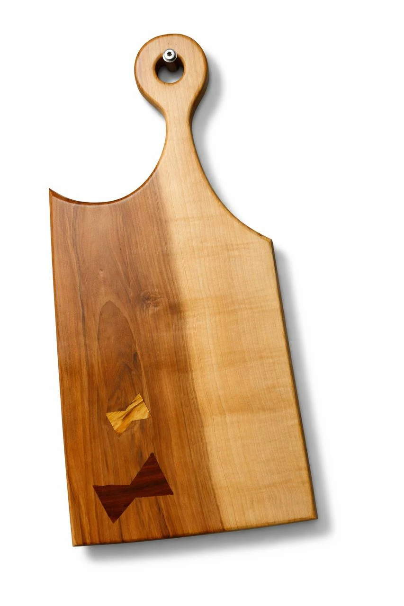
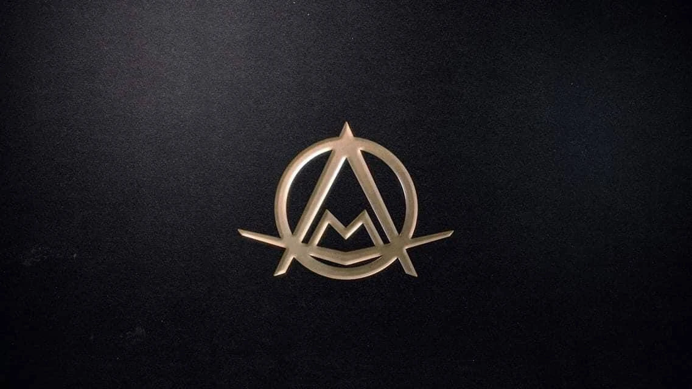
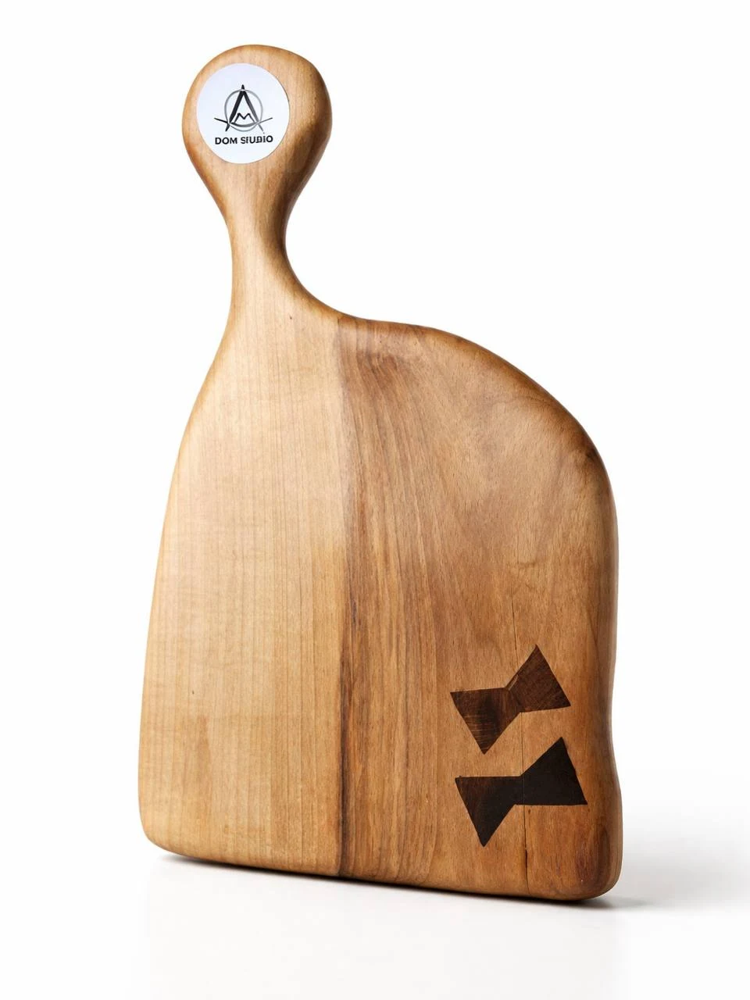
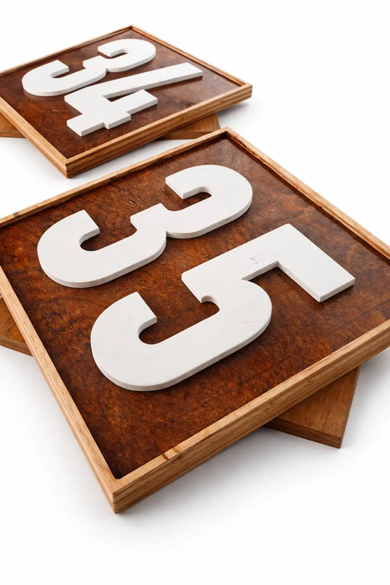
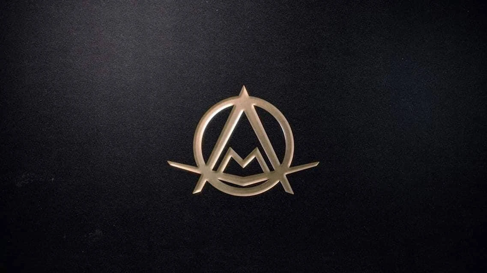
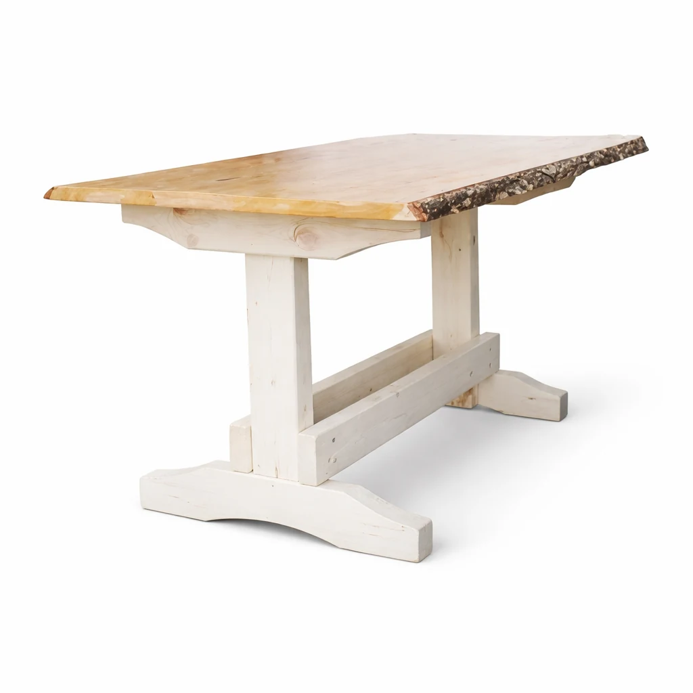
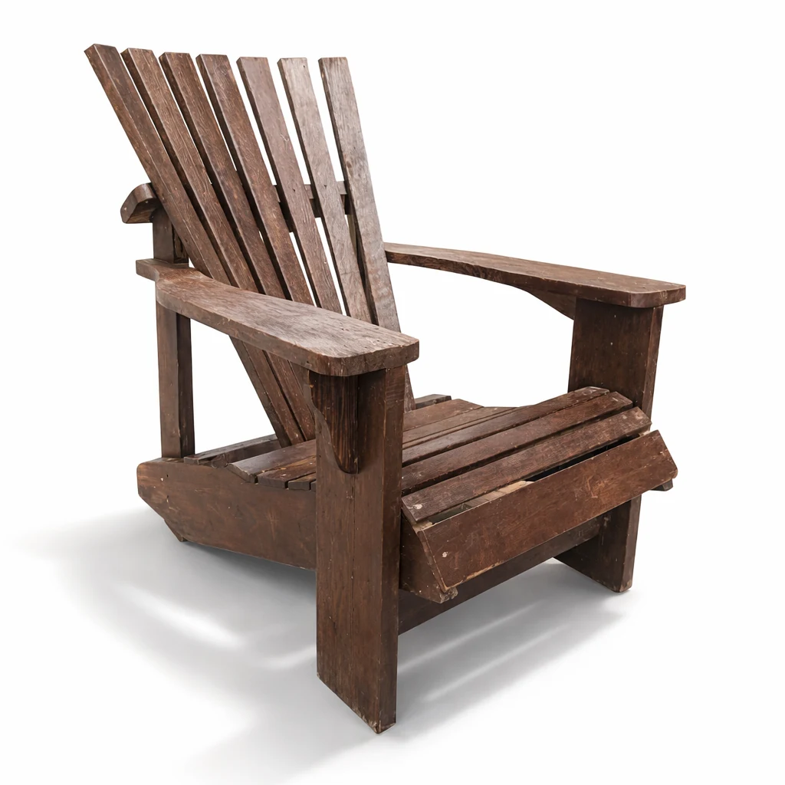
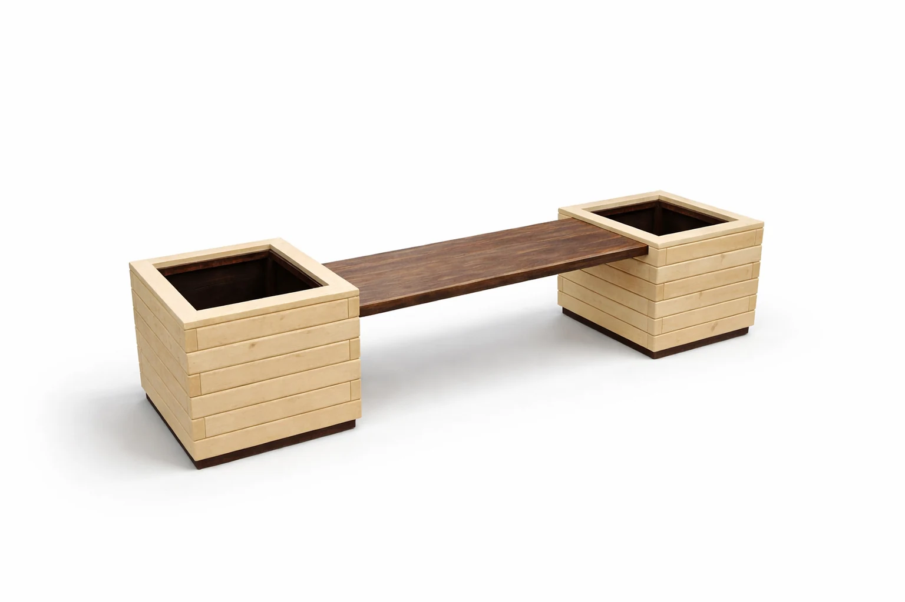

DOM STUDIO · käsitöö Eestist
Puidust kingitused, graveering ja esemed, millel on oma iseloom.
Valmistame serveerimislaudu, personaalseid kingitusi, sisustuselemente ja eritellimusel loodud tooteid koju, kingituseks või ettevõttele. Iga ese sünnib materjali, vormi ja detaili järgi.
- Käsitööna valminud Eestis
- Personaalsed detailid ja graveering
- Tellimused nii eraisikule kui ettevõttele


Stuudiost
Kaasaegne käsitööstuudio, kus loeb materjal, vorm ja eseme iseloom.
DOM STUDIO on Eesti handmade-bränd, kus puidust sünnivad kingitused, serveerimisdetailid, sisustuselemendid ja eritellimusel valmivad esemed. Me ei taha teha lihtsalt järjekordset toodet riiulile, vaid asja, mida on hea kinkida, kasutada ja alles hoida.
Meile on oluline puhas vorm, hea materjal ja tunne, et ese on tehtud põhjusega. Sellepärast peab ka veebileht näitama mitte ainult tooteid, vaid kogu stuudio meeleolu: käsitöö, rahulik esteetika ja võimalus teha töö just sinu inimesele, kodule või projektile.
Suunad
Asjad, mida teeme kõige paremini.
DOM STUDIO ei tähenda ainult üht tüüpi toodet. Meie tugevus on mitu eri suunda, mida ühendavad ühtne maitse, käsitöö ja võimalus kohandada ese konkreetse inimese, ruumi või sündmuse järgi.
Personaalsed kingitused
Nimed, kuupäevad, sümbolid ja detailid, mis muudavad eseme päriselt isiklikuks.
Serveerimis- ja lõikelauad
Puhas vorm, tugev puidutunnetus ja esitlus, mis mõjub hästi nii köögis kui kingitusena.
Graveering, numbrid ja sildid
Majanumbrid, sildid ja väiksemad detailid, kus täpsus ja visuaalne puhtus on eriti olulised.
Dekoor ja sisustuselemendid
Puidu ja epoxy-aktsendiga esemed, mis töötavad ruumis kui pilkupüüdev detail.
Eritellimus ja väikemööbel
Kui vaja on eset konkreetse mõõdu, funktsiooni või karakteriga, mitte lihtsalt valmis lahendust.
Portfoolio
Tööd, mis väärivad lähedalt vaatamist.
Siin on valik esemetest, mille kaudu DOM STUDIO kõige kiiremini lahti rullub: puhas tootefoto, selge vorm, puidu tekstuur, personaalsed detailid ja mõned suuremad tööd, mis annavad tunnetuse skaalast.
{kind=link}

{kind=link}

{kind=link}


{kind=link}



{kind=link}


{kind=link}

{kind=link}



Eritellimus
Kui sul on idee olemas, aitame selle vormi ja materjali leida.
DOM STUDIO üks tugevusi on see, et me ei tööta ainult valmis kujude järgi. Mõnikord on vaja kingitust nimega, mõnikord maja numbrit, mõnikord eset kindla interjööri jaoks või väikest seeriat ettevõttele. Just selliste tööde jaoks see stuudio ongi.
- Nimed, kuupäevad, sümbolid, fraasid ja meeldejäävad detailid.
- Graveering ja personaliseerimine, mis näeb välja loomulik, mitte juurde kleebitud.
- Suuruse, vormi ja esituse kohandamine vastavalt inimesele, ruumile või sündmusele.
Ettevõtetele
DOM STUDIO sobib ka ettevõttele, kui vaja on eset, millel on oma nägu.
Kui sul on vaja firmakingitusi, bränditud tooteid, silte, numbreid või väikest seeriat ettevõtte jaoks, peab ka see landing kohe näitama, et me oskame selles formaadis töötada. Mitte odava suveniirikataloogina, vaid sama läbimõeldud käsitööna nagu eraisiku tellimustes.
Kontakt
Räägime sinu ideest või tellimusest.
Kui sul on vaja kingitust, eset koju, silti, numbrit või täiesti oma lahendust, siis kõige lihtsam on lihtsalt ühendust võtta. Kiireim kanal on Instagram, kuid olemas on ka telefon ja email.
- Võid tulla konkreetse ülesandega või ainult tunnetusega, mida soovid saada.
- Aitame leida formaadi, mis mõjub paremini ja mida on ka päriselt ilus teostada.
- See landing on tehtud nii, et seda oleks mugav saata nii erakliendile kui ettevõttele.
Peamine kanal
DOM STUDIO
Kõige kiiremini vastame Instagramis.
Telefon: +372 57 818 661